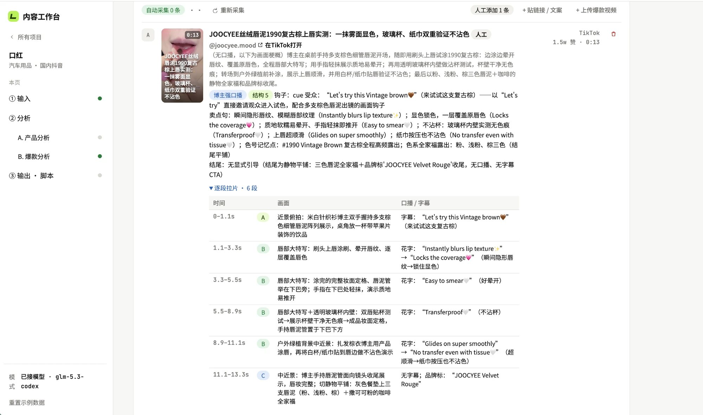
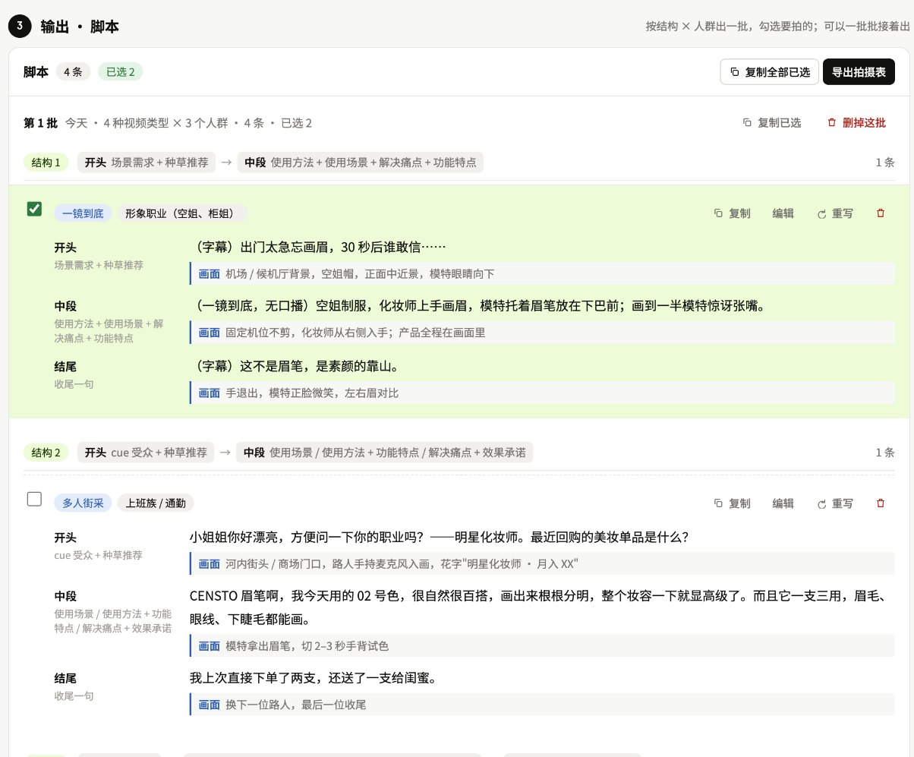

短视频内容工作台
给越南短视频运营团队用。痛点：一个新品出第一版脚本要几个人做几天，拉片标准在每个人脑子里。做成网页工具：资料传进去，AI 分析产品和爆款，批量出脚本，人审完导出。
基线 → 目标一周 → 三天 → 半天内
无 AI 一周，用通用 AI 三天；工作台目标半天内，试点计时中
谁在用越南短视频运营，真实项目试点
状态测试中 · v0.15
怎么实现
三步：输入 → AI 分析 → 出脚本
Before几个人各凭经验，几天出第一版After传资料，串着跑，人只审和勾选
01输入人
- 产品信息、品牌 brief、平台数据截图、几条爆款视频
02AI 分析AI
- 产品分析：用户画像、卖点、痛点、场景 → 人群 × 痛点 × 卖点匹配表
- 爆款分析：每条拆结构、钩子、卖点句、结尾；逐帧拉片表（时间 · 画面 · 口播）；多条汇总出高频钩子和卖点句
03出脚本AI + 人
- 按人群和结构批量生成，每条分前 3 秒、中段、结尾，口播和画面分开写；词只从团队自己的钩子库、话术库里取
- 人审、采用、导出拍摄表给编导；跑得好的做前 3 秒裂变，进脚本库
长什么样
三块，对应上面三步。


